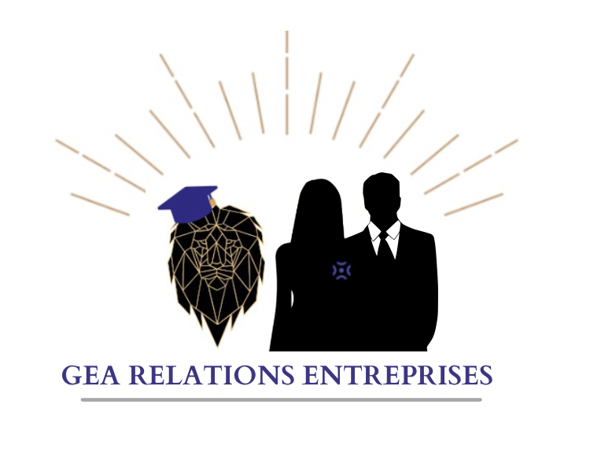

9 février 2024
SAÉ · Projet d'équipe

GEA Relations Entreprises
Développer un réseau d'organisations pour accroître la notoriété du département GEA et ouvrir aux étudiants des pistes d'orientation et de carrière. Le projet s'est concrétisé par une conférence de l'orientation à l'IUT de Meaux, où d'anciens étudiants sont venus raconter leur parcours.
Mon rôle
Responsable du pôle démarchage et partenariats. J'ai sollicité le cabinet du Maire de Meaux, la Mission locale, Pays de Meaux Habitat et le Club des Entrepreneurs du Val d'Europe pour soutenir l'événement.
9
anciens étudiants intervenants
500 €
de soutien obtenu auprès de Pays de Meaux Habitat